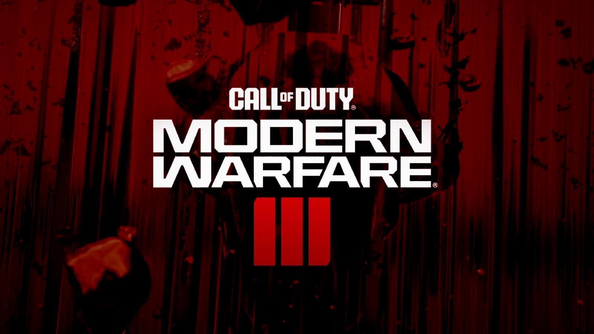
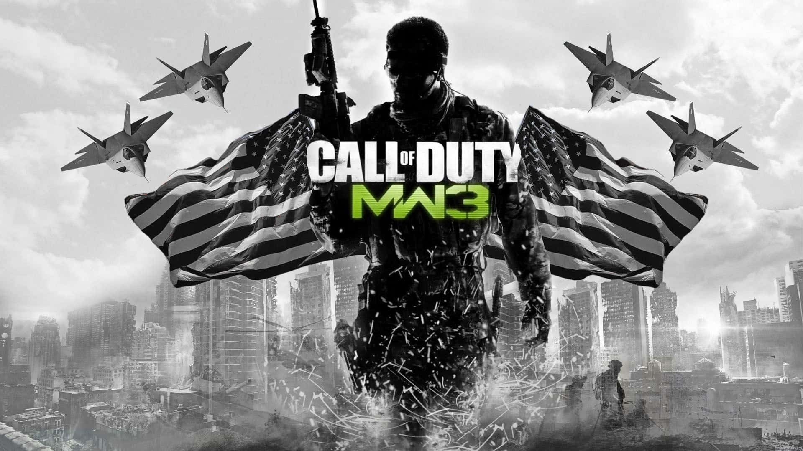

CALL OF DUTY MW3
Klik tulisan dibawah untuk mengaktifkan nontifikasi
Modern Warfare III - Makarov Reveal Trailer
Mute Suara
Captain Price and Makarov: Awesome Phone Call

Baca Selengkapnya

Baca Selengkapnya